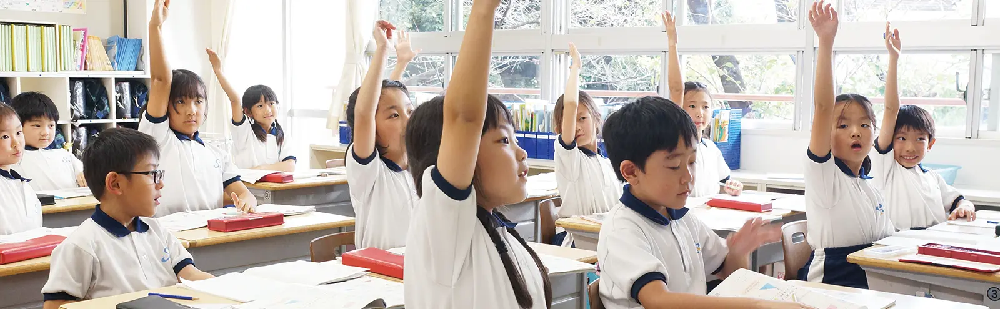


知性を高めるためには、基礎をもとに応用する力が必要です。そのためには本質を知り、そこから探求していく楽しさを感じることが大切です。 探究心を高めることで自主的に学ぶ姿勢が身につき、能力をさらに磨いていきます。知識の詰め込みではなく、本質のわかる学習指導を徹底しています。
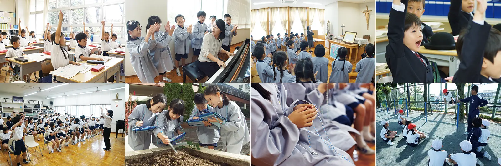
ことばはすべての学習に繋がる基礎となるものです。
この基礎能力の教育を担う国語科では、学年の段階にあわせてしっかりと聞き、自分の考えを書き、発表することができるよう指導しています。
「聞く、読む、話す、書く」それぞれをより充実したものにするため、古典や音読、作文などを活用しながら、言葉の感性を磨き、子どもたちが豊かな言葉の表現を身につけていきます。
行事ごとに作文を書かせ、五感で感じたことを言葉で伝えようとすることで豊かな表現力を養っています。
また、はがき作文や読書感想文に各学年で取り組み、6年間を通して体験や考えを整理し、伝えたいことをまとめる学習を重視しています。 6年生では、卒業を前に「生い立ちの記」と題してこれまでの12年間を振り返り、原稿用紙30枚程度の自分史を作成します。
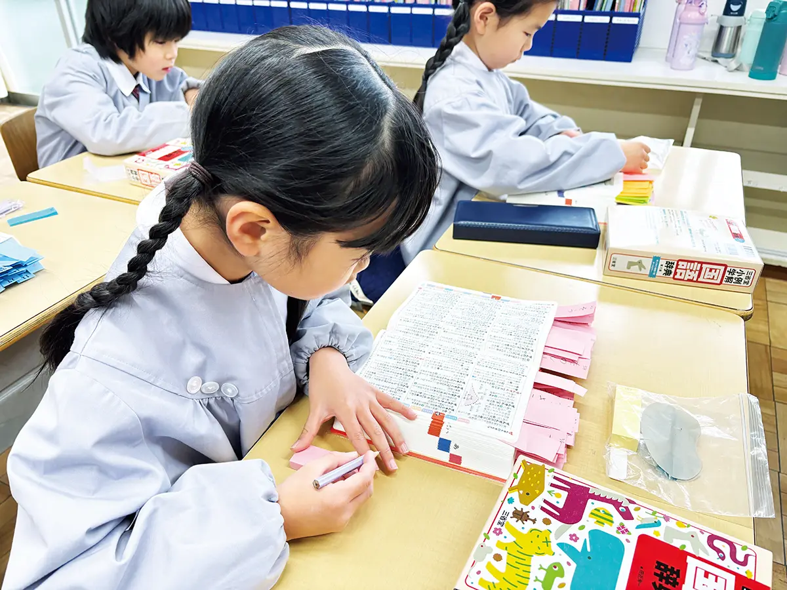
数は生活の中で切り離せないもの。星美クラスの算数科では、数の感覚に慣れ、計算力を積み重ね、思考力、応用力を養います。
課題に対して解決方法を見つけるときは、友達や先生に考えを伝えながら、わかったときには共に喜び、算数の楽しさを学んでいきます。
公式の丸暗記ではなく、決まりを発見し、どのようにその決まりを発見したかというプロセスを大切にしています。
それは、問題の意味を考え、整理し、持っている知識を活用しながら答えを導き出す思考力、応用力こそが、子どもの本当の力になると考えているからです。
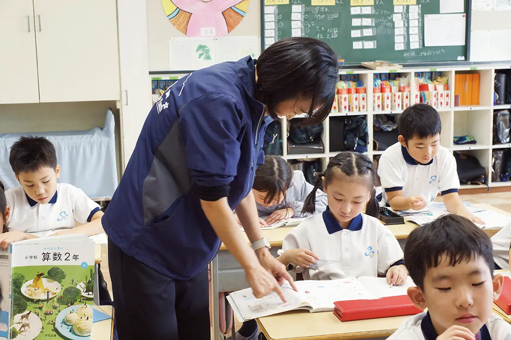
私たちの身の回りには、科学の素材がたくさんあります。実物に触れながら、疑問を持つことから理科の学習がスタートします。
自分の疑問が課題となり、実験や観察に取り組みます。
「何とか解決したい」「もっとくわしく調べてみよう」このプロセスを大切にし、科学の見方や考え方を深めていきます。
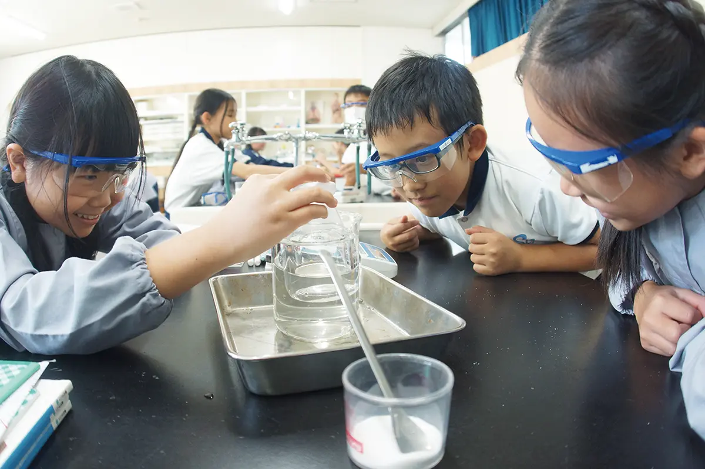
社会科で学ぶ内容は、先人に学び、先見性をもってこれからの時代に正しい選択ができるようにするためのものです。
社会事象を教えるだけでなく、なぜそうなっているのかを他の事象との関係を含めて学習していきます。「歴史は未来を照らす鏡」と言われています。 関係性を理解することで単に暗記するのではなく、理由を明確にし、次に来るであろう事象を予測することができます。
また、データ、及びその実証をもとに考えさせ、話し合うことで子どもたちの理解や考えを深めることも目指しています。
社会科で取り扱う課題を話し合う際、重要になるのが仮定を証明するための材料となる資料、データとそれに伴う自身の持つ考えです。
資料、データは、図書館などで調べ、時には子どもたちが家族や身の周りの方に聞き取りをしながら調べることもあります。
また、ノートに自分の意見を書くスペースを設け、考えをまとめるよう指導しています。
星美クラスの社会科では本物に触れることを重視して「見学」を多く取り入れています。
各学年で２回以上は実施している社会科見学では、３年生「地域」、４年生「東京都」、５年生「日本の産業」、６年生「日本の歴史／政治／世界との関わり」をテーマに地域や施設を見学します。
体験の中から自分の目で確かめ、学ぶことで、理解や考え方が磨かれ、話し合いも充実したものになります。
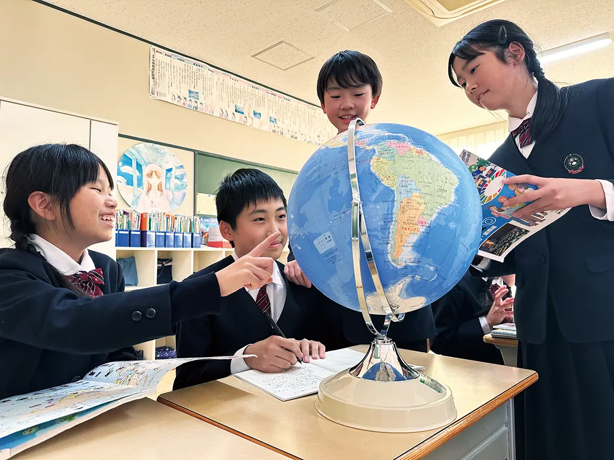
英語の音に慣れ親しみ、英語で表現する基本的なコミュニケーション能力の育成はもちろん、コミュニケーションを通して海外の文化に目を向け、国際理解の感覚を養うことを大切にしています。
これは、英語ができることで国際的な視野が広がり、子どもの探究心をさらに広げることができるからです。また、「世界中には友達がいっぱいいる」ということを教え、平和教育にもつなげています。
星美クラスの英語教育は、国際理解教育をふくめた総合学習の一環として学習指導を行っています。
星美クラスの英語教育では、昭和２８年から、教科としての学習を行っています。
１年生から４年生は、週２時間ある授業のうち、１時間はネイティブ・スピーカーとのティーム・ティーチングを取り入れています。
低学年では「基礎力」を、中学年では「応用力」を、高学年では「運用力」を身に付け、積極的に英語でコミュニケーションをとり、グローバル化社会に適応できる能力を育成します。
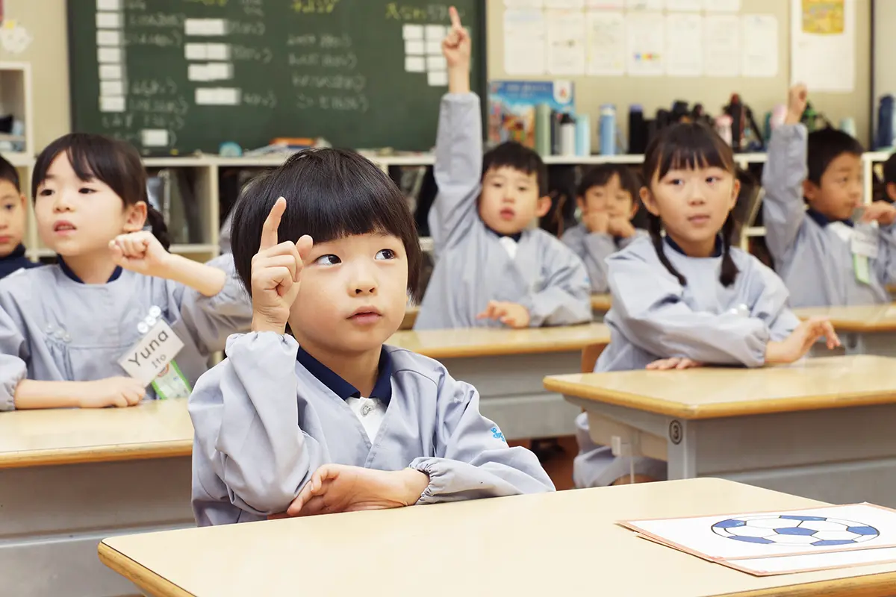
生活科の学習は、子どもたちの生活から始まり、生活に返ってくる、とても身近なものです。
身の回りの自然現象や社会事象に関心をもって関わり、自分自身や人々との生活について、直接体験を通して自立への基礎を養っていきます。
体験から生まれる素朴で純粋な感動、驚き、疑問、発見などの「気づきの質」を高めるとともに、さらによりよいものに工夫改善を図る活動を大切にしています。
主体的に学ぶ意欲をもたせるには、ひとりひとりが「もっと、もっと」と活動や体験に熱中できるカリキュラムが必要です。
星美クラスでは、見て、触れて、育てる（心をそそぐ）自然体験と、人との関わりや調べて学ぶ社会体験の２つの体験を重視しています。
この豊かな体験を通して、さらによりよいものに工夫改善を図り、主体的に学び、表現できる子どもの育成を目指しています。
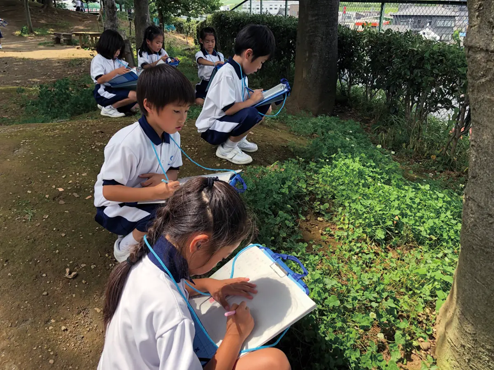
星美クラスの音楽は、基礎を学ぶだけではなく、教育全体の中でどのように音楽をからめていくかを大切にしています。 これは、創立者聖ドン・ボスコが教育において音楽が重要であると考えていたからです。
星美クラスで行われる行事の多くに音楽が取り入れられているのは、そういった教育と音楽が密接に繋がっていることを象徴しています。
授業のはじまりには歌唱指導の一環として、典礼に沿った聖歌を歌っています。
聖歌をただ歌うのではなく、聖歌の意味を日々の生活に関連付けながら歌い、祈りにつながるよう指導していきます。
これは、聖歌を歌うことを通して、子どもの心の成長を願い、神に感謝して生きる心を育てていくねらいがあります。
星美クラスでは、音楽を通して自分の思いを豊かに表現する子どもの育成を目指しています。
音楽は心を豊かにし、エネルギーをもらうことのできる素晴らしいものです。子どもたちは毎日そういった音楽のある空間で生活し、いきいきと成長していきます。
また、感性や表現力だけでなく、共に歌うことで規律や協調性も育まれていきます。
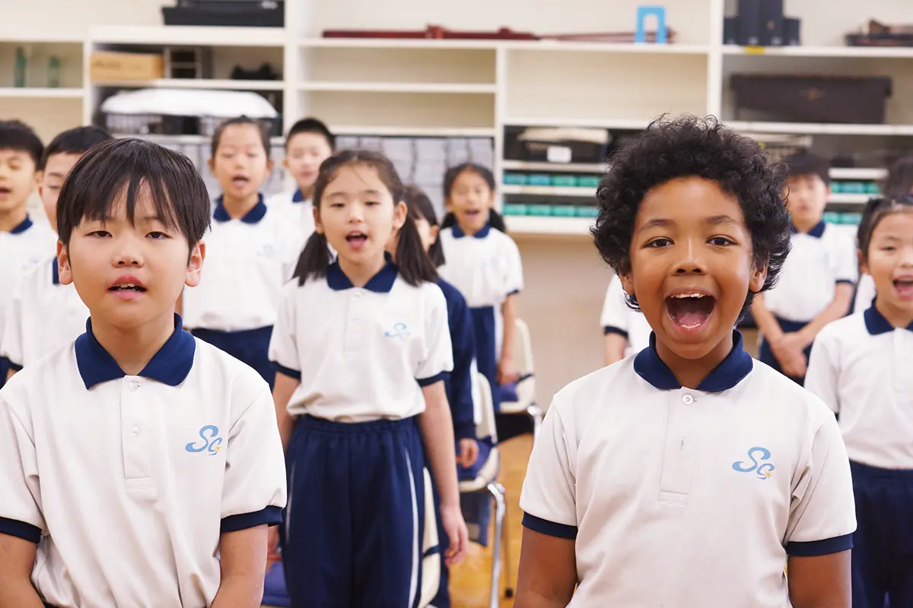
５年生から２年間学ぶ家庭科は、家族との関わりや家庭生活のあり方（調理／裁縫／住まい等）を学んでいきます。 家庭的な雰囲気を大切にしている星美クラスでは宗教教育でも家族との関わりについて学ぶため、より深い理解を図ることができます。
また、家庭科で学ぶことすべてが実際の家庭生活で活用するためのものです。学んだことを家庭でも実践するよう指導しています。
お手伝いではなく、家族の一員として仕事、役割の意識を持たせることを目標としています。
便利な世の中であるからこそ実際に手を動かすことが大切です。 星美クラスでは、針の扱い方から包丁、ガスコンロの取り扱いなど、実習を通して一から指導しています。
映像を活用し、視覚的にも理解を深める工夫をしているほか、個別に対応することで根気強く取り組める環境を整えています。
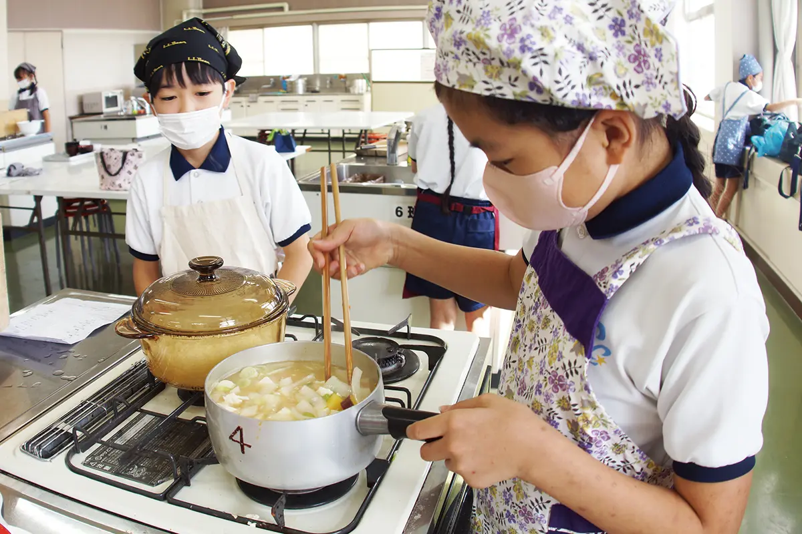
運動に親しみ、生涯にわたって運動の楽しさに触れていくことのできる「生きる力」の育成を目指しています。
星美クラスでは、従来の学習内容「技能」「態度」に加え、「学び方（課題解決学習）」を重視しています。課題解決学習とは、自分の能力を知り、周りの人を観察し、アドバイスできる環境づくりです。 運動中は自分のことが客観的に見ることができないため、このような環境がとても重要になります。
また、この取り組みを通して、友だちの良いところを見つけ、認め、さらに自分なりの努力ができる姿勢を養っていきます。
体育科では、子ども一人ひとりが頑張るだけではなく、子ども同士が協力し合い、刺激し合って、互いに向上していく関わりの中で成長する環境と心を大切にしています。
人との関わりが希薄になりがちな現代社会だからこそ、周りと深く関わることの大切さを学び、協力して問題を解決していくことで、より学習を深めていきます。
星美クラスでは、技能の完成ではなく、いろいろな身体の部位を使い、基本となる動きを身につける指導をしています。
これは、「体力」「技能」の向上だけでなく、練習することの大切さを学び、努力する姿勢を大切にしているからです。
また、子どもたちが努力を重ねられるよう、発問や課題設定、学習カードや場の作り方を工夫しています。
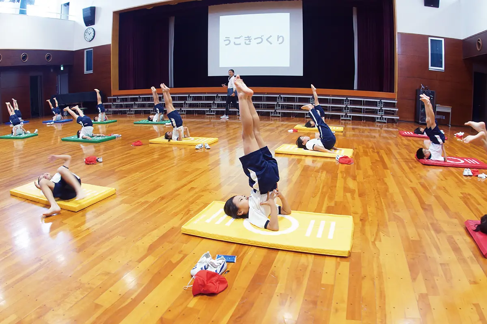